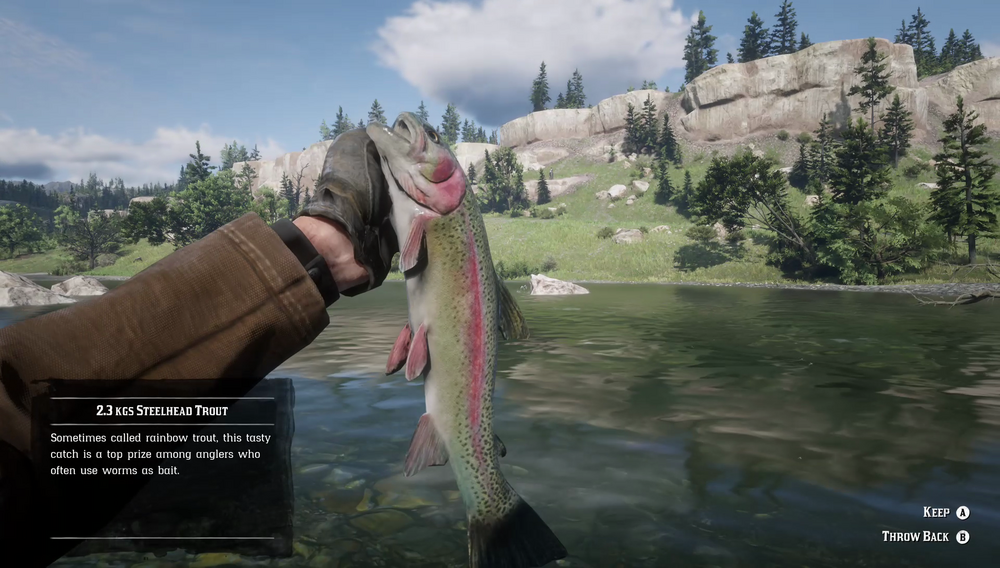

Steelhead Trout populations are dotted around various lakes, mostly in the south. Steelhead Trout respond to many types of bait, most especially worms. They are fairly large and good to eat. Bigger specimens can be quite powerful and strongly resist being reeled in. They are notably more active in rainy weather. A few hardy fishermen in the northern Roanoke Valley claim to have seen, but never managed to catch, a Legendary Steelhead Trout.
Steelhead Trout are only found in the southern portion of the map, where they appear more abundantly in the region of Lemoyne. The Lower Montana River in West Elizabeth has one of the most plentiful Steelhead populations. They can also be fished in New Austin along the San Luis River.
